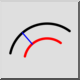
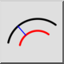

Menú: Dibujar > Arco > Concéntrico (Distancia)
Acceso directo: A, C
Comandos: arcconcentric | ac
Barra de herramienta / icono:
 

Menú: Dibujar > Arco > Concéntrico (Distancia)
Acceso directo: A, C
Comandos: arcconcentric | ac
Descripción:
Con esta herramienta se pueden dibujar arcos concéntricos.
Procedimiento: